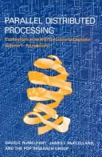

Parallel Distributed Processing: Explorations in the Microstructure of Cognition (2 vols.)
Book·David E. Rumelhart, James L. McClelland, PDP Research Group, 1986·并行分布加工

The foundational collection of connectionism, in two volumes. It includes the well-known model that learns the English past tense with a network.
- Author
- David E. Rumelhart, James L. McClelland, PDP Research Group
- Year
- 1986
- Difficulty
- Advanced
- Kind
- Primary text
- Schools
- Connectionism
- Core theories
- The Past-Tense Debate
Editions
- English edition Parallel Distributed Processing: Explorations in the Microstructure of Cognition (2 vols.) David E. Rumelhart, James L. McClelland, and the PDP Research Group · MIT Press, first edition · 1986 Open Library ↗